Как установить программу, внести акты и получить готовые исполнительные схемы в nanoCAD — DWG и PDF — без ручной отрисовки. По одной схеме или всю очередь сразу в авто-режиме.
TAIS · версия 0.1 · октябрь 2026Windows 10/11 · nanoCAD
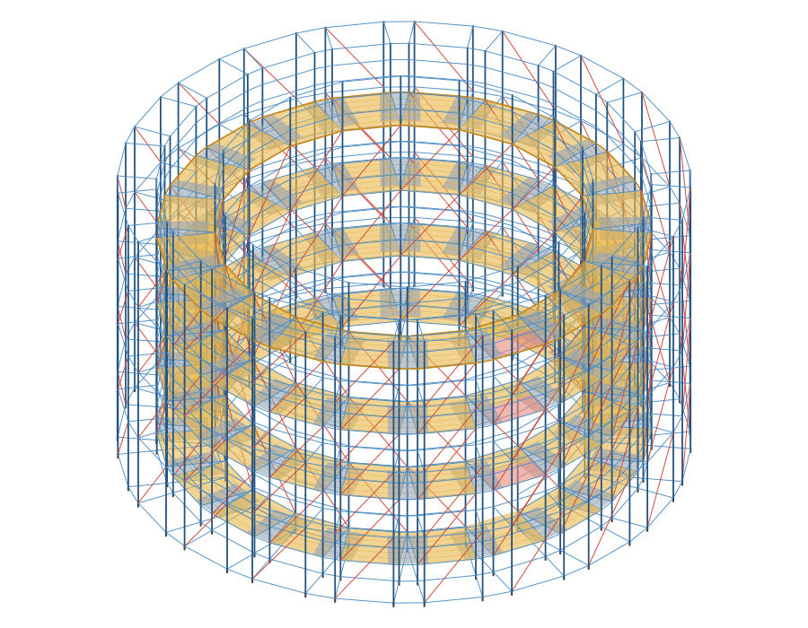
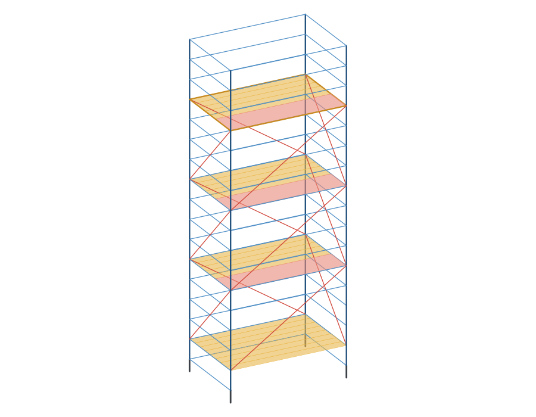
Башенные
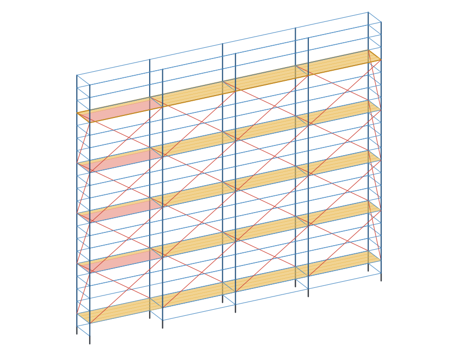
Фасадные
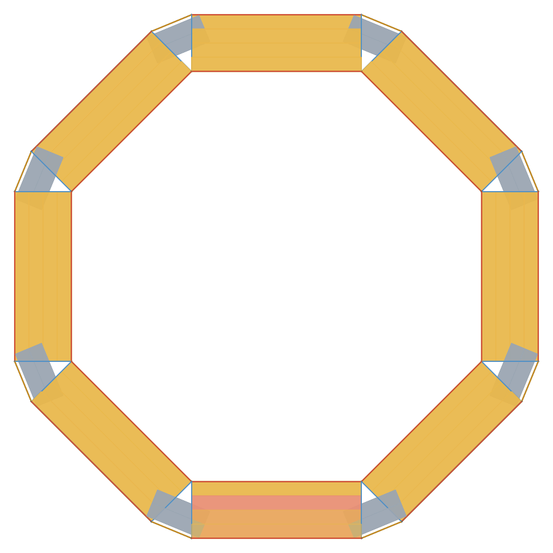
Радиальные
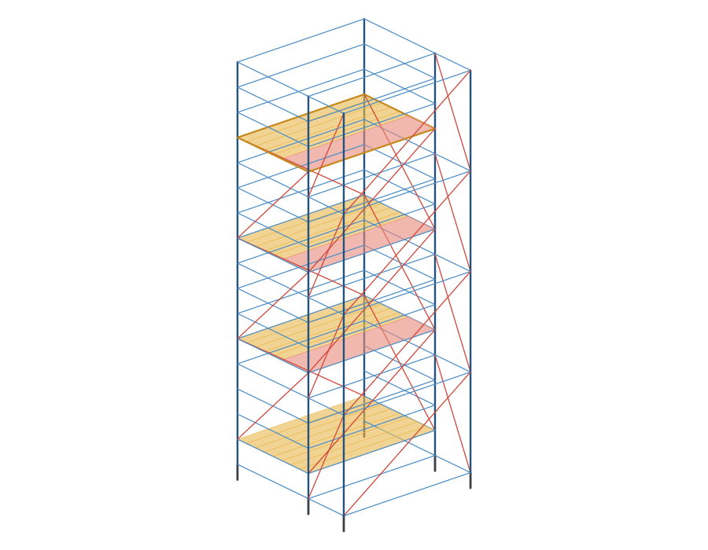
Уширение
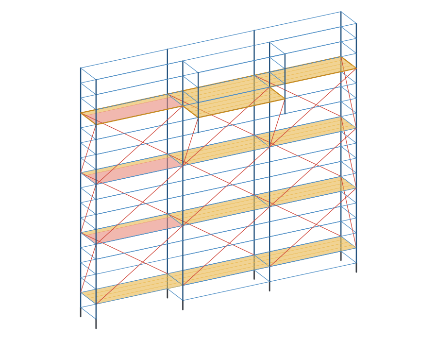
Балкон
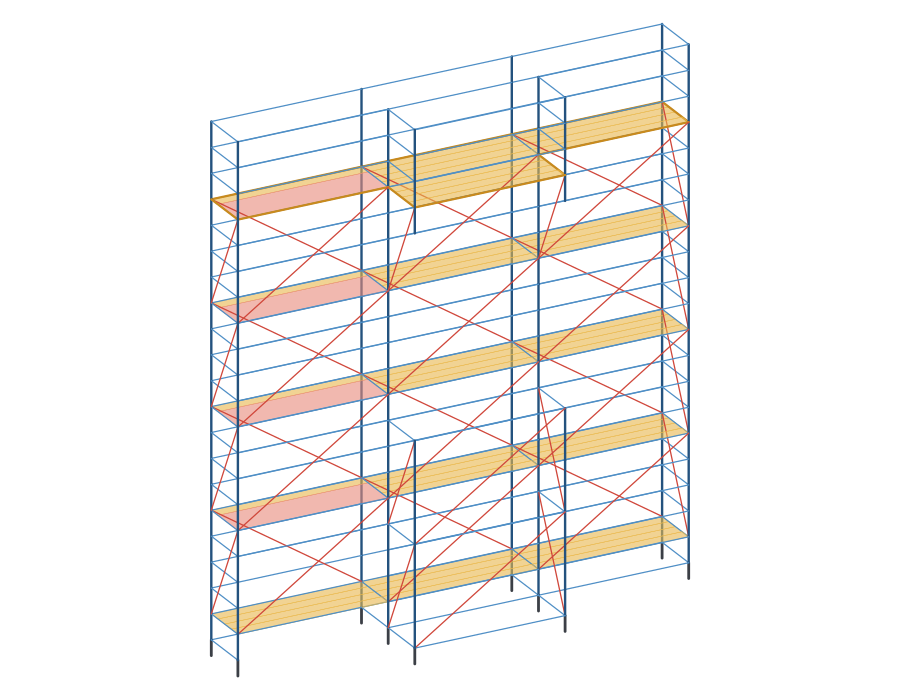
Балкон над уширением
НОВОЕАвто-режим — вся очередь актов строится, печатается и сохраняется одной кнопкой. Все типы конструкций — башенные, фасадные, радиальные, уширения и балконы, отдельно и вместе. Аналитика — схемы по дням, итоги и круговые диаграммы; последний номер ИС — над списком актов.
1 · Внести акты«Добавить акт» → реквизиты, конструкции, ситуационный план через Ctrl+V.
2 · Назначить номера ИССтартовый номер — остальные акты пронумеруются по порядку.
3 · Отработать очередь«Построить в nanoCAD» по одному акту или «Авто» — вся очередь сразу.
1Что нужно для работы
TAIS — программа для Windows, которая по акту строит исполнительную схему строительных лесов «Союз» в nanoCAD: вставляет конструкцию в шаблон, заполняет основную надпись, спецификацию и ситуационный план, сохраняет DWG и при необходимости печатает или сохраняет в PDF.
КомпьютерWindows 10 или 11.
nanoCADНужен для построения чертежей. Без него программа работает: акты вносятся, расчёт и спецификация считаются, но построить схему нельзя.
Шаблон чертежа (Шаблон.dwg) и файл спецификации (Веса элементов.csv) уже встроены в программу — отдельно их искать и указывать не нужно.
Демо-версия
Если установщик называется TAIS Demo до <дата> Setup…, это демо-версия. Она работает до указанной даты (в шапке видно «Демо до …»), после этого программа закрывается экраном «Демо-версия закончилась». Акты и готовые схемы остаются на компьютере. Не переводите дату на компьютере назад — программа это заметит и заблокируется.
2Установка
Запустите TAIS Setup 0.1.0.exe.
Выберите папку установки (можно оставить предложенную) и нажмите «Установить».
На рабочем столе появится ярлык TAIS.
Python, Node.js и другие программы ставить не нужно — всё уже внутри установщика. После установки программа сразу готова к работе: шаблон и спецификация встроены, схемы сохраняются в Документы\TAIS.
Если Windows показывает окно «Система Windows защитила ваш компьютер» — нажмите «Подробнее» → «Выполнить в любом случае». Установщик не подписан цифровой подписью, поэтому Windows его не узнаёт.
3Настройки
Сразу после установки менять настройки не обязательно. Раздел «Настройки» нужен, если хотите что-то поменять. После любых изменений нажмите «Сохранить».
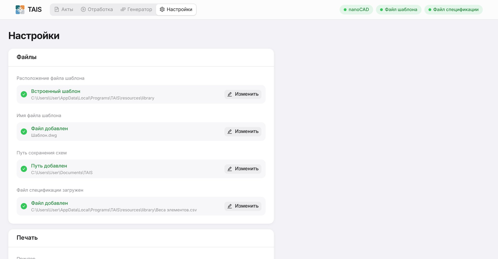
Раздел «Настройки»: встроенный шаблон, путь сохранения схем, файл спецификации
Файлы
Расположение файла шаблона — по умолчанию «Встроенный шаблон». Чтобы работать со своим, нажмите «Изменить» → «Выбрать» и укажите папку с вашим Шаблон.dwg. Вернуться — ссылка «Вернуть встроенный шаблон».
Имя файла шаблона — Шаблон.dwg, менять не нужно.
Путь сохранения схем — куда складываются готовые DWG и PDF (по умолчанию Документы\TAIS).
Файл спецификации — встроенный Веса элементов.csv. Чтобы заменить новой версией, нажмите «Изменить» и выберите файл. При переустановке он снова заменится встроенным.
Печать
Принтер — по умолчанию «Как в шаблоне». Чтобы выбрать другой, нажмите «Список принтеров» (nanoCAD запустится, если ещё не открыт).
Если выбрать PDF-принтер (встроенный PDF nanoCAD или Microsoft Print to PDF), листы сохранятся в PDF рядом с DWG одним файлом <номер ИС>.pdf — без окна «Сохранить как».
После печати программа показывает сообщение с путями к PDF и DWG; папка и PDF сами не открываются.
Один раз отключите открытие PDF после печати. Встроенный PDF-принтер nanoCAD по умолчанию открывает каждый PDF в программе просмотра — в авто-режиме это окно на каждой схеме.
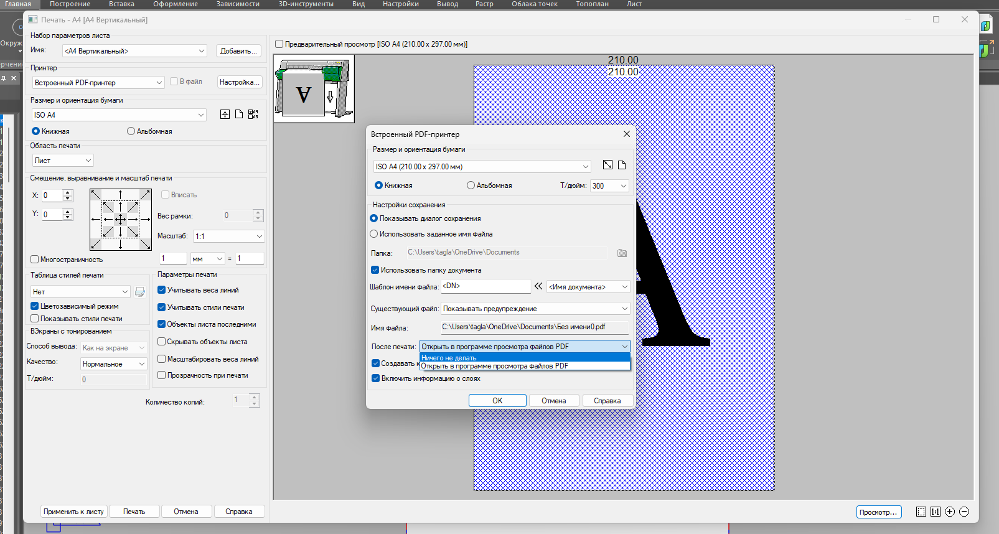
nanoCAD: «Печать» → «Настройка…» → «После печати: Ничего не делать»
В nanoCAD: Файл → Печать (Ctrl+P).
В поле «Принтер» выберите «Встроенный PDF-принтер» и нажмите «Настройка…» справа.
В поле «После печати» выберите «Ничего не делать» вместо «Открыть в программе просмотра файлов PDF».
OK — в окне настройки и в окне печати.
Основная надпись
Префикс номера ИС и Год в номере ИС — из них собирается номер ИС:
П1-02 - Новойл - Ц№2 - 36-1-2 - ИС2180 - 2026
Заводы — краткое имя (выбирается в акте) и полное (пишется в основной надписи). «Добавить завод» — новая строка, корзина — удалить.
4Флаги в шапке
Справа вверху три флага. Перед работой убедитесь, что все три зелёные. nanoCADФайл шаблонаФайл спецификации
Флаг
Зелёный
Красный
nanoCAD
nanoCAD установлен или запущен (при наведении — версия)
nanoCAD не найден — схемы строить нельзя, расчёт работает
Файл шаблона
Шаблон.dwg найден
Папка не указана или файла нет — по клику откроются настройки
Файл спецификации
Веса элементов.csv загружен
Файл не загружен — по клику откроются настройки
Во время построения в шапке появляется флажок «Построение…», в авто-режиме — «Авто: 2 из 5».
Если окно программы узкое, флаги сворачиваются в цветные точки — подпись видна при наведении. В совсем узком окне в меню разделов остаются только значки.
5Акты
Раздел «Акты» — список всех актов. Переключатель сверху: «В работе» / «Готово» / «Все». Двойной щелчок по строке или карандаш — открыть акт, корзина — удалить.
Над списком — плашка «Последний назначенный номер ИС»НОВОЕ: наибольший номер ИС среди всех актов, его полный номер и акт, справа — следующий свободный номер и кнопка «Открыть акт». Листать список до конца больше не нужно. Колонку «Номер ИС» можно сортировать щелчком по заголовку.
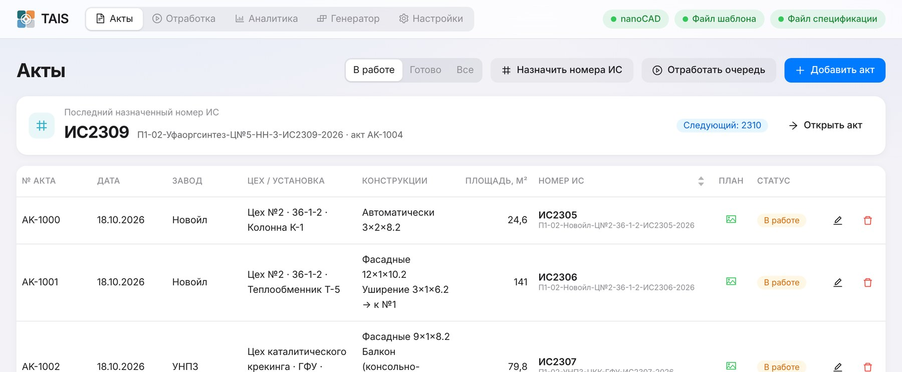
Список актов: над таблицей — последний назначенный номер ИС и следующий свободный
Добавить акт
Нажмите «Добавить акт» и заполните форму.
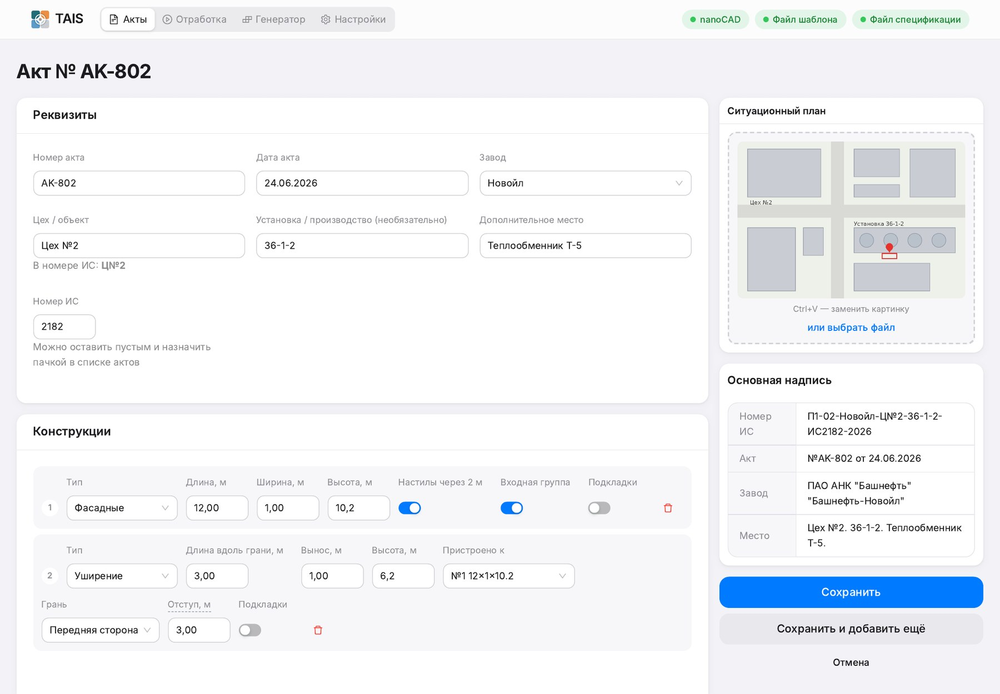
Форма акта: две конструкции — фасадные леса и пристроенное к ним уширение. Справа — ситуационный план и основная надпись
Реквизиты
Номер акта — например AK-717.
Дата акта — строго ДД.ММ.ГГГГ, например 24.06.2026.
Завод — из списка (задаётся в настройках).
Цех / объект — обязательно.
Установка / производство — необязательно.
Дополнительное место — необязательно, попадёт в основную надпись.
Номер ИС — можно не заполнять и назначить потом сразу для всех (раздел 6).
Конструкции — одна или несколько (раздел 9).
Сокращения в номере ИСЦех и установка из нескольких слов сокращаются: «Цех каталитического крекинга» → «ЦКК», «Цех №2» → «Ц№2». Одно слово не меняется. Под полем видно, что попадёт в номер.
Ситуационный план — обязателенСкопируйте картинку (например, скриншот карты), щёлкните по полю «Ситуационный план» и нажмите Ctrl+V. Можно «или выбрать файл». Повторное Ctrl+V заменяет картинку.
Кнопки«Сохранить» — сохранить и вернуться к списку. «Сохранить и добавить ещё» — новый акт с тем же номером, датой, заводом, цехом и установкой; внизу — «Предыдущий акт». Удобно для пачки актов с одного объекта.
6Номера ИС
Нажмите в списке актов «Назначить номера ИС», введите стартовый номер и нажмите «Назначить». Все акты без номера получат номера по порядку добавления, начиная со стартового. Акты, у которых номер уже есть, не меняются.
Стартовый номер подставляется сам — следующий после последнего назначенного (его видно на плашке над списком). При необходимости его можно исправить.
7Отработка — построение схем
Раздел «Отработка» (или «Отработать очередь» в списке актов) показывает акты «В работе» по одному.
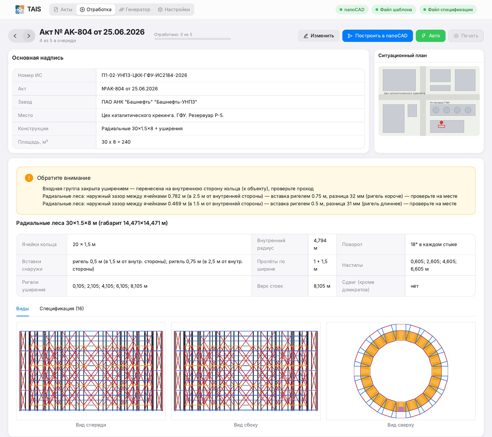
«Отработка»: основная надпись, ситуационный план, блок «Обратите внимание», параметры конструкции и три вида
Проверьте основную надпись, конструкции, площадь, ситуационный план и виды внизу. Стрелки ‹ › — предыдущий / следующий акт. «Изменить» — открыть акт для правки. Жёлтый блок «Обратите внимание» — что программа изменила или просит проверить на месте.
Нажмите «Построить в nanoCAD». Программа откроет nanoCAD (если он закрыт), создаст копию шаблона (сам Шаблон.dwg не меняется), вставит конструкции, заполнит основную надпись, таблицу габаритов, спецификацию и ситуационный план, сохранит DWG с именем по номеру ИС и пометит акт «Готово».
Появится окно «Схема готова»: «Показать схему» — окно nanoCAD с чертежом на передний план; «Распечатать» — листы A3 и A4 (или PDF); «Распечатать и сохранить» — напечатать и закрыть файл с сохранением; «Показать в папке».
Программа перейдёт к следующему акту. Полоска «Отработано» — сколько актов построено за текущий запуск.
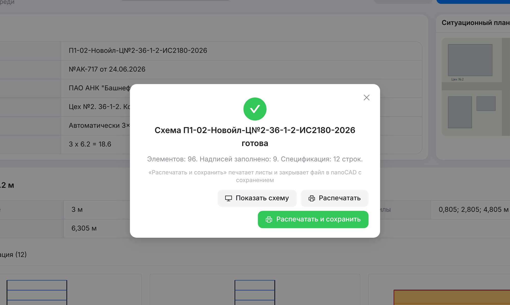
Окно «Схема готова»
Кнопка «Печать» рядом с «Построить в nanoCAD» печатает последнюю построенную схему.
Во время построения можно переходить на другие экраны: окно «Схема готова» появится, когда схема будет построена.
Если у акта нет номера ИС, сверху будет предупреждение — построить схему без номера нельзя.
Перед построением закройте в nanoCAD лишние чертежи и не трогайте nanoCAD, пока программа строит схему.
8Авто-режим НОВОЕ
Зелёная кнопка «Авто» рядом с «Построить в nanoCAD» строит все акты очереди («В работе») по порядку, без окна «Схема готова» после каждого акта. Внесли пачку актов, назначили номера — запустили и занимаетесь своими делами.
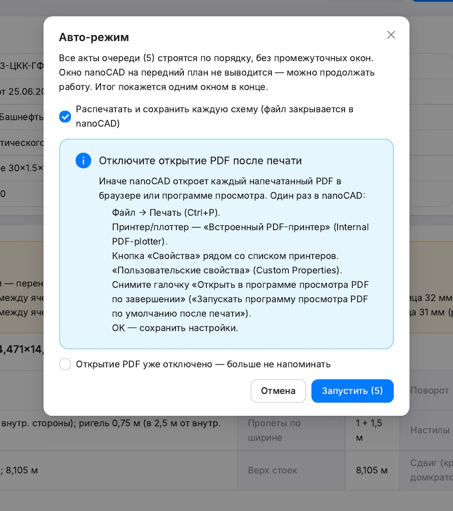
Окно запуска: число актов, печать, подсказка про PDF
На «Отработке» нажмите «Авто». В окне видно, сколько актов в очереди.
Галочка «Распечатать и сохранить каждую схему» (включена по умолчанию): каждая схема после построения печатается на принтер из настроек (или сохраняется в PDF рядом с DWG) и закрывается в nanoCAD с сохранением. Без галочки — только построение и DWG.
При печати на встроенный PDF-принтер один раз отключите открытие PDF (раздел 3, «Печать»). Отключили — отметьте «больше не напоминать».
Нажмите «Запустить». Окно nanoCAD на передний план не выводится — можно работать в других программах и на других экранах TAIS.
«Остановить» — закончить после текущего акта (текущая схема достроится).
В конце — одно окно с итогом. Если TAIS был свёрнут, он мигнёт в панели задач.
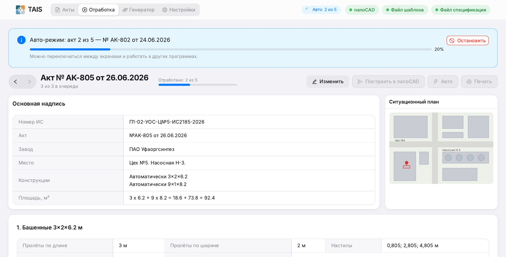
Ход авто-режима: текущий акт, полоска, кнопка «Остановить»; в шапке — «Авто: 2 из 5»
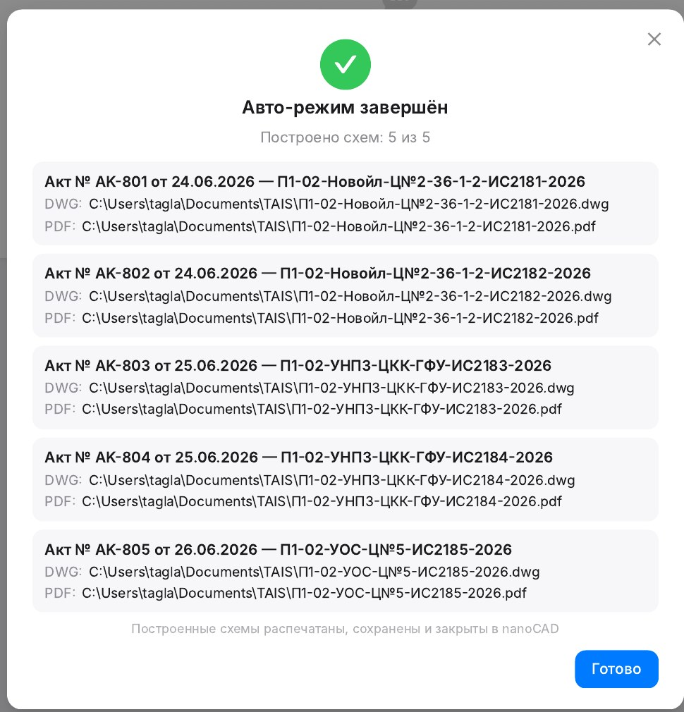
Итог: для каждого акта — номер ИС, пути к DWG и PDF
Что бывает в пути
Ситуация
Что делает авто-режим
У акта нет номера ИС или конструкций
Пропускает акт, в итоге — причина; остальные строятся
Не распечаталась одна схема
Схема построена и сохранена в DWG, в итоге — «Не распечатан: …»
nanoCAD не найден, нет шаблона, ошибка кэша gen_py
Останавливается: «Авто-режим прерван», остальные акты остаются в очереди
Нажато «Остановить»
«Авто-режим остановлен», непостроенные акты остаются в очереди
Построенные акты переходят в «Готово». Чтобы достроить остаток после остановки, снова нажмите «Авто».
Перед запуском назначьте номера ИС, закройте лишние чертежи в nanoCAD и не трогайте nanoCAD, пока идёт построение.
9Конструкции ВСЕ ТИПЫ
Каждая конструкция — одна строка в акте. «Добавить конструкцию» — ещё одна, корзина — убрать. Несколько конструкций на одной схеме располагаются друг за другом с промежутком 1 м.
Типы конструкций
Башенные
Отдельно стоящая башня: настилы через 2 м с люками, вход с лестницей, диагонали на всех гранях.
Фасадные
Длинные леса вдоль стены или аппарата; длина набирается пролётами до 3 м.
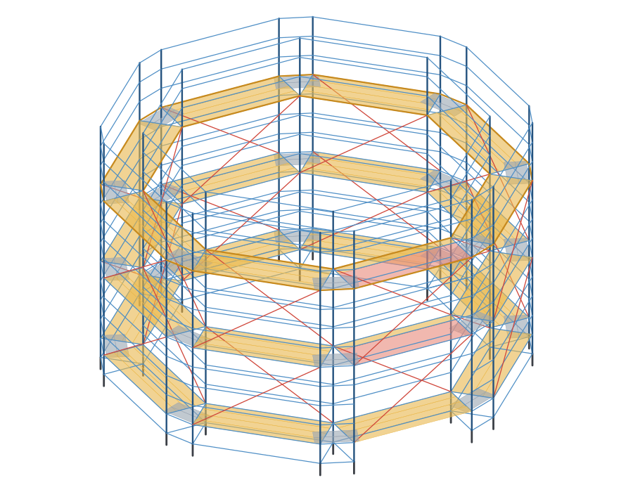
Радиальные
Замкнутое кольцо вокруг резервуара, колонны или трубы; можно с уширениями наружу.
Уширение
Ещё один ряд стоек к грани лесов — без настилов и перил, ригели через 2 м.
Балкон (консольно-опорные)
Верхний настил продлевается наружу на подвесных стойках 2 м с диагоналями.
Авто
Автоматически
Программа сама выбирает башенные или фасадные леса по размерам.
Как работает «Автоматически». Башенные — если длинная сторона меньше короткой в 1,5 раза или обе стороны не больше 3 м. Иначе — фасадные. Например, 3×2 и 4×3 — башенные, 6×1 и 9×1,5 — фасадные. Выбранный тип виден на «Отработке» и в «Генераторе».
Габариты; дробные — через запятую (6,2). У уширения — «Длина вдоль грани» и «Вынос», у радиальных — «Длина кольца»
Настилы через 2 м
Промежуточные настилы на каждом ярусе 2 м (по умолчанию включено)
Входная группа
Вход с лестницей на передней грани (по умолчанию включено)
Подкладки
Деревянные подкладки под домкраты
Что программа делает сама
ПролётыИз 0,75 / 1,0 / 1,5 / 2,0 / 2,5 / 3,0 м — минимум пролётов и разных размеров: 12 м → 3×4, 7 м → 3+3+1.
ВысотаКратна 0,5 м, остаток — в сдвиг: 6,2 → 6,0 и подъём на 0,2 м (домкраты на земле); 6,4 → 6,5 и опускание на 0,1.
НастилыВерхний — на 1,5 м ниже верха стоек, ниже — через 2 м, в каждом люк. Нижний ярус ниже 2 м — ступенька или лестница с земли.
Перила и бортикиРигели через 0,5 м и бортики — только по наружному краю; внутри — под настилами.
ДиагоналиВ крайних пролётах, в полных ярусах по 2 м; на противоположных гранях — в разные стороны.
Входная группаНа передней грани в пролёте с люком; закрыта пристройкой — переносится на другую сторону.
Если программа что-то изменила или просит проверить на месте, на «Отработке» и в «Генераторе» появится жёлтый блок «Обратите внимание». Конструкции ниже 1,5 м программа пока не строит.
Уширение и балкон
Пристраиваются к другой конструкции акта или к уже стоящим лесам.
Пристроено к — номер конструкции из этого акта или «Отдельно (к стоящей)», если леса уже стоят и строится только пристройка.
Грань — передняя / задняя сторона, левый / правый торец.
Отступ, м — от левого торца (для сторон) или от передней стороны (для торцов).
Для уширения вместо ширины указывается Вынос, м.
У пристроенного балкона высоты нет — он ставится по верху основной конструкции; у отдельного указывается высота стоящих лесов.
Точно по стойкамКрая пристройки должны попасть на стойки основной. Не попадают — программа разобьёт пролёты основной по краям пристройки и предупредит.
Проход на балконНа общей стороне перила основной выше настила балкона снимаются. Вынос балкона — один пролёт 0,75–3,0 м, основная — от 2,5 м.
ВходВход, закрытый уширением, переносится на противоположную сторону основной конструкции.
Балкон над уширениемМожно на одной стороне, если уширение не выше основной минус 3,5 м (последний этаж 1,5 м + диагональ 2 м).
Радиальные леса
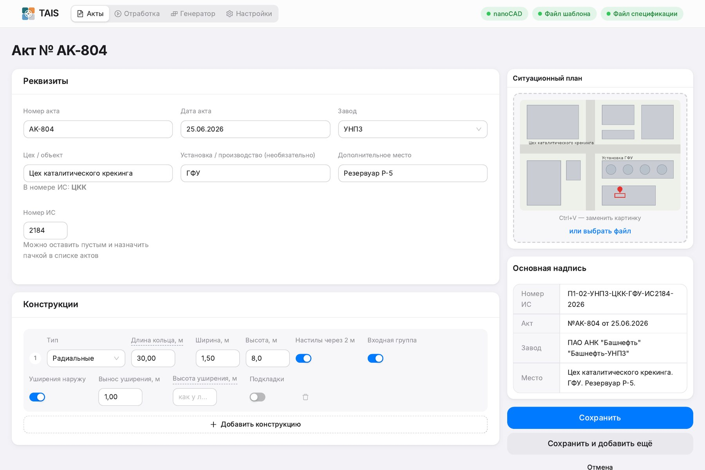
Акт с радиальными лесами: длина кольца, ширина, высота, уширения наружу
Длина кольца, м — сумма длин всех ячеек по внутренней стороне (примерно длина окружности объекта с зазором). Ширина — ширина ячейки.
Ячейки подбираются сами: одного размера или двух, равномерно по кольцу. Соседние поворачиваются вокруг общей внутренней стойки, снаружи зазор закрывается ригелем-вставкой.
Клин в настиле между ячейками перекрывается стальными планками на каждом настиле.
Уширения наружу — у каждой ячейки: Вынос и Высота (пусто — на всю высоту). Вход тогда переносится на сторону объекта.
Разница зазора и вставки, щели у стоек — в «Обратите внимание»: проверьте на месте.
10Примеры построений НОВОЕ
Так программа собирает конструкции по данным акта. Картинки — расчёт TAIS (те же элементы, что попадут в чертёж), в аксонометрии.
стойкиригелидиагоналинастилынастил с люкомбортикипланки в клинестоящие леса
Башенные 3 × 2 × 8,2 м
Строится 8,0 м с подъёмом на 0,2. Четыре настила, люки соседних ярусов развёрнуты, вход спереди.
Автоматически · 3 · 2 · 8,2
Фасадные 12 × 1 × 10,2 м
Четыре пролёта по 3 м, пять настилов, диагонали в крайних пролётах.
Автоматически · 12 · 1 · 10,2
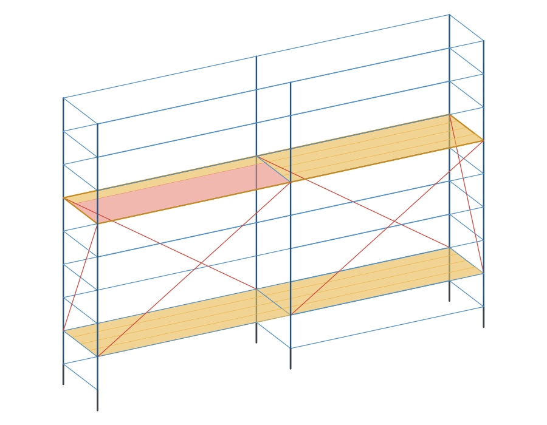
Невысокие фасадные 6 × 1 × 4,2 м
Нижний ярус 0,5 м — настил служит ступенькой, лестница не нужна.
Автоматически · 6 · 1 · 4,2
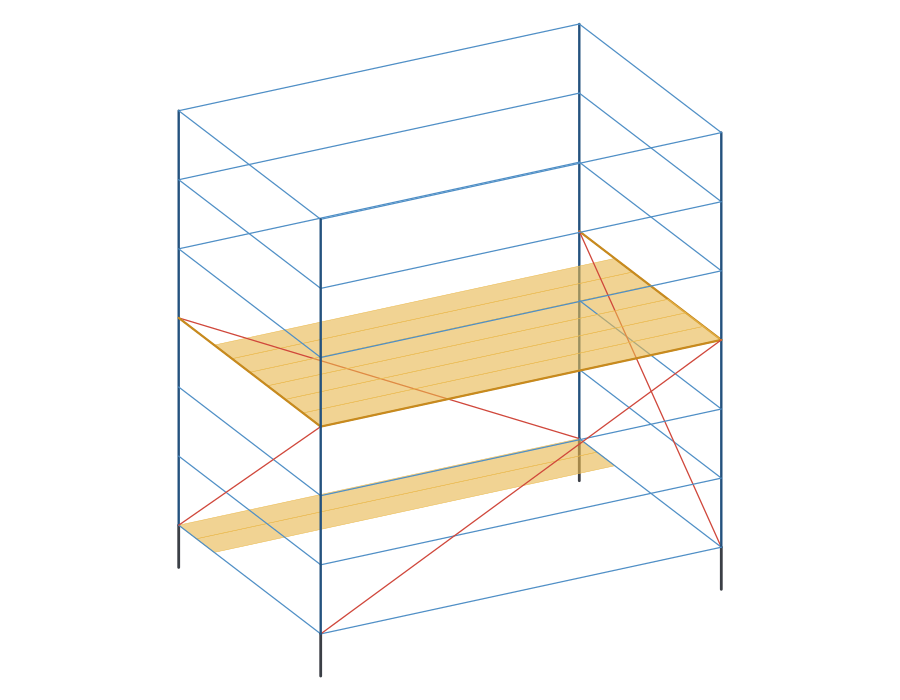
Низкая башня 3 × 2 × 3,2 м
Один настил на 1,8 м; нижний ярус 1,5 м — полосы настила на земле и лестница с земли.
Автоматически · 3 · 2 · 3,2
Башня + уширение спереди 3×2×8,2 + 3×1
Уширение на всю переднюю грань — вход перенесён на заднюю сторону.
Наружные стойки уширений тоже соединены вставками; вход перенесён к объекту.
Предупреждения — в «Обратите внимание»
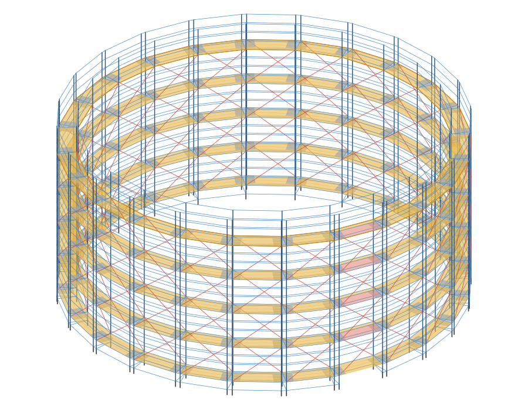
Большое кольцо 60 × 1 × 10,2 м
24 ячейки по 2,5 м, радиус 9,6 м, поворот 15° в каждом стыке, вставки 0,25 м — разница со стандартным ригелем 11 мм.
Радиальные · 60 · 1 · 10,2
11Генератор
Раздел «Генератор» — быстрая проверка конструкции без акта: задайте конструкции (любые типы, в том числе пристройки и радиальные) и нажмите «Рассчитать» — появятся виды, параметры и спецификация. «Построить в nanoCAD» создаст чертёж без основной надписи акта. «Папка чертежей» откроет папку со схемами.
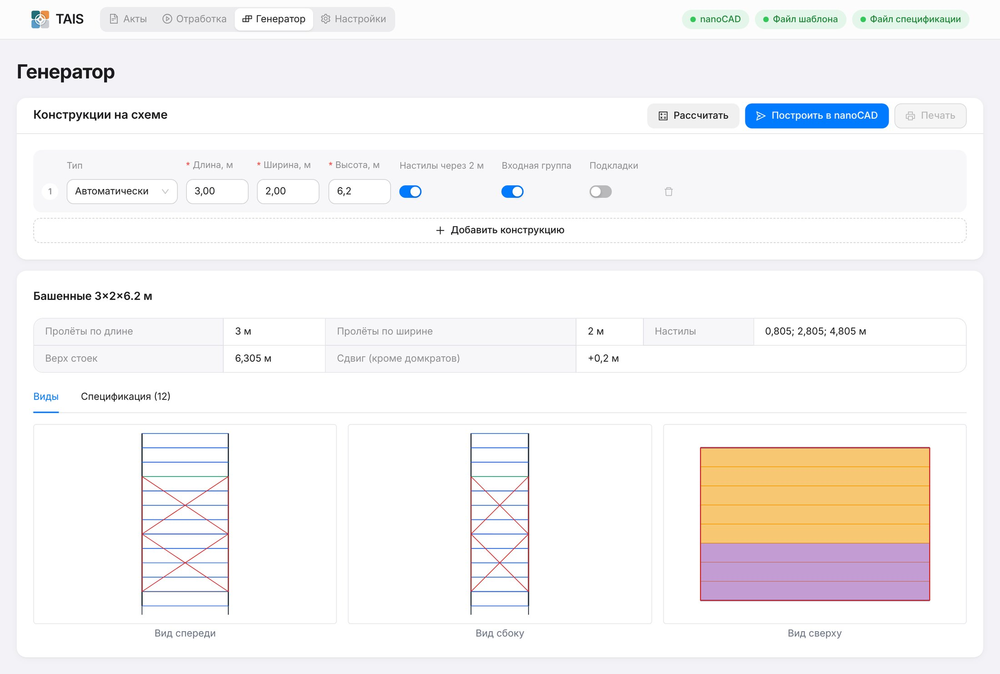
Генератор: расчёт пролётов, настилов и видов без акта
12Аналитика НОВОЕ
Раздел «Аналитика» показывает, сколько схем построено и как распределена работа. Сверху справа — период: 14, 30 или 90 дней, рядом — «Обновить». Данные обновляются и сами после каждой построенной схемы, в том числе в авто-режиме.
«Аналитика»: плитки с итогами, схемы по дням, круговые диаграммы и цеха
Плитки
Сегодня и На этой неделе — сколько схем построено (неделя — с понедельника).
За N дней — схем за выбранный период и в среднем в день.
Площадь готовых — сумма площадей всех построенных схем, м².
В работе — акты в очереди и сколько из них без номера ИС. Щелчок открывает список «В работе».
Последний № ИС — наибольший назначенный номер; щелчок открывает акт.
Схем за день
Столбик — число схем, построенных в этот день (по дате построения, а не дате акта). Пунктир — среднее за период, справа вверху — рекордный день. Переключатель «Схемы / Площадь» показывает вместо числа схем площадь, м². Наведите на столбик — появятся день недели, дата и значение.
Диаграммы
Статус актов — «Готово» и «В работе».
Типы конструкций — по всем конструкциям во всех актах.
Заводы — число актов по заводам.
Цеха — шесть цехов с наибольшим числом актов, остальные — строкой «Другие».
Наведите на сектор или строку легенды — в центре кольца появятся значение и доля.
Аналитика считается по актам на этом компьютере — у каждого пользователя своя база (раздел 13).
13Где хранятся данные
Что
Где
Готовые схемы DWG и PDF
Папка из «Настройки → Путь сохранения схем» (по умолчанию Документы\TAIS)
Акты (база данных)
%APPDATA%\TAIS\tais.db
Ситуационные планы
%APPDATA%\TAIS\pictures\
Настройки
%APPDATA%\TAIS\settings.json
Журнал ошибок
%APPDATA%\TAIS\logs\
Чтобы открыть %APPDATA%\TAIS, нажмите Win+R, вставьте %APPDATA%\TAIS и нажмите Enter.
Резервная копия: скопируйте папку %APPDATA%\TAIS целиком. На новом компьютере положите её на то же место после установки — акты и настройки вернутся. У каждого пользователя своя база актов на своём компьютере.
14Если что-то не так
Проблема
Что делать
Красный флаг «nanoCAD»
Установите nanoCAD. Расчёт и акты работают и без него
Красный флаг «Файл шаблона»
Щёлкните по флагу и нажмите «Вернуть встроенный шаблон» или укажите папку с Шаблон.dwg. Не помогло — переустановите программу
Красный флаг «Файл спецификации»
Щёлкните по флагу и загрузите Веса элементов.csv или переустановите программу
График «Схем за день» пустой
Схемы считаются по дате построения в nanoCAD. Если за выбранный период схем не строили, выберите 90 дней
Акт не сохраняется
Не вставлен ситуационный план или неверная дата (нужно ДД.ММ.ГГГГ)
«Нет в шаблоне (учтены только в спецификации): …»
В шаблоне нет блока этого элемента — в спецификации он есть, на чертеже нет. Сообщите тому, кто ведёт шаблон
«Спецификация НЕ заполнена»
Причина указана в сообщении; подробности — в журнале
Жёлтый блок «Обратите внимание»
Программа перестроила пролёты, перенесла вход, изменила высоту уширения или просит проверить зазоры — прочитайте и проверьте на месте
Кнопка «Авто» недоступна
Идёт построение или очередь пуста
В авто-режиме на каждой схеме открывается PDF
Во встроенном PDF-принтере nanoCAD выберите «После печати: Ничего не делать» (раздел 3)
«Авто-режим прерван»
Причина — в итоговом окне. Исправьте и снова нажмите «Авто»: построенные акты уже в «Готово»
Окно «Ошибка кэша gen_py»
Сохраните и закройте чертежи в nanoCAD, нажмите «Очистить и перезапустить»
«Сервер TAIS неожиданно остановился» / «Не удалось запустить сервер»
Перезапустите программу. Если повторяется — пришлите журнал
Программа не открывает второе окно
TAIS уже запущен — он выйдет на передний план
Если ошибка повторяется, пришлите разработчику текст ошибки (скриншот) и файл %APPDATA%\TAIS\logs\backend.log.